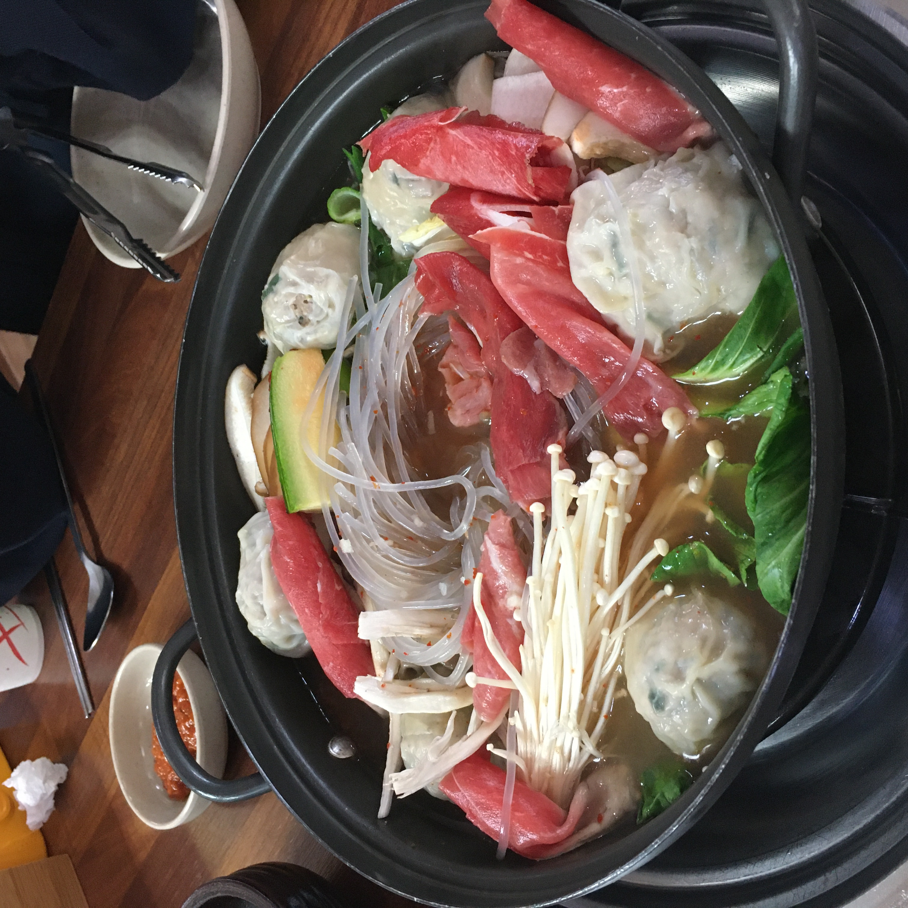

2020 10 25 박가네 해물 칼국수

부모님이 쉬는 일요일 점심엔 무엇을 먹을지 고민한다. 거의 대부분은 이 칼국수집으로 결정된다. 원래는 우리
동네 근처에 있었던 곳인데 이제는 조금 떨어진 곳으로 이전 했지만, 맛 때문에 발길을 끊을 수가 없을 정도이다.
우리가족은 모두 면을 좋아한다 엄마 한사람을 제외하면 말이다.
그럼에도 불구하고 이곳에 가면 에피타이저로 나오는 보리밥 덕분에
모두가 만족스러운 식사를 하고 나올수 있다.
깊은 국물과 쫄깃한 면발 정갈한 반찬들! 메인이 아니지만 만두전골 또한 별미이다.